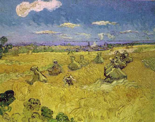

Shevuot (Oaths) 33 - Oath of Testimony Must Be About Money
In all the following cases one is not liable for a false oath of testimony.
A claimant said to two witnesses, "I adjure you to come and testify that I am a Kohen" - because this is not a monetary claim. Or he said "that I am a Levi," "that so-and-so is a Kohen," or "that so-and-so is a Levi."
If he said, "That so-and-so raped another man's daughter" or "seduced another man's daughter." Although the rapist must pay damages and the fifty-shekel fine, and the claim is monetary, but in order to be liable, the witnesses need to be adjured by the claimant himself, to whom the rapist is to pay, not by another person.
"That he ignited my stack of grain on the Sabbath," - since desecration of the Sabbath is punishable by death, this makes one free from monetary liability even when he is not executed.
Art: Vincent Van Gogh - Wheat Stacks With Reaper